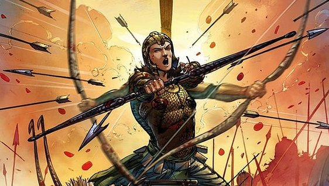

Cultural Education Project - 2nd Semester AIE
Satyaki
 Satyaki, also called Yuyudhana, is a powerful warrior belong to the Yadava-Vrishni dynasty of Lord Krishna, in the Mahābhārata
epic. Satyaki is devoted to Krishna and his best friend Arjuna, with whom he trained under Drona in military arts. He was born in the line of Shini of the Vrishni clan, and was a son of Satyaka. He was strongly and passionately
favors the cause of the Pandavas over the Kauravas in the Kurukshetra War. Satyaki accompanies Krishna to the Kuru capital with Krishna as the emissary of peace which is ridiculed and turned down by the sons of Dhritarashtra. In
the Kurukshetra war, Satyaki and Kritavarma were two important Yadava heroes who fought on opposing sides. Satyaki fought on the side of the Pandavas, Kritavarma joined the Kauravas. Satyaki was a valiant warrior and on one particular
occasion, stunned Drona by allegedly breaking his bow for a successive 101 times. In the course of the fourteenth day of the conflict, Satyaki fights an intense battle with his archrival Bhurisravas with whom he has a long standing
family feud. After a long and bloody battle, Satyaki begins to tire, and Bhurisravas batters him and drags him across the battlefield. Arjuna is warned by Lord Krishna of what is happening. Bhurisravas prepares to kill Satyaki,
but he is rescued from death by Arjuna, who shoots an arrow cutting off Bhurisravas' arm. Bhurisrava wails out that by striking him without warning, Arjuna had disgraced the honor between warriors. Arjuna rebukes him for attacking
a defenseless Satyaki. He reiterates that protecting Satyaki's life at all costs was his responsibility as a friend and comrade in arms. Satyaki emerges from his swoon, and swiftly decapitates his enemy. He is condemned for this
rash act, but every soldier present realizes that the power of Krishna made Satyaki end Bhurisravas' life, which was going to happen anyway. Satyaki and Kritavarma both survived the Kurukshetra conflict .
Kritavarma
is involved in the slaughter of the Panchalas and the sons of the Pandavas in the undeclared night attack Page 9 of 15 with Kripacharya and Ashwatthama. 36 years after the war, the Yadavas, including Satyaki and Kritavarma are
involved in a drunken brawl with Satyaki accusing Kritavarma of killing sleeping soldiers and Kritavarma citicizing Satyaki for his beheading of the unarmed Bhurisravas. After the Kurukshetra war, Gandhari curses Krishna that his clan will be destroyed 36 years later in a fratricidal massacre. During the 36th year, the Yadavas retire to Prabhāsa where they are allotted temporary residences and
start reveling and drinking. Inebriated, Satyaki laughs at and taunts Kritavarma for his actions on the night of the 18th day of battle. As others agree with Satyaki, Kritavarma becomes enraged and lambasts Satyaki for slaying
Bhurishravas in cold blood. Countering this, Satyaki narrates the story of Kritavarma plotting to kill Devaki's father. Warriors start taking sides depending on who their clans had fought for during the war; wine flows and tempers
flare. Enraged, Satayki gets up from the ground, and to his shock he discovers that the grass he pulls up from his clenched hands has turned into weapons (thanks to a rishi's curse). Redfaced, Satyaki decapitates Kritavarma and
begins assaulting the warriors who are on Kritavarma's side. The Bhojas and the Andhakas, incensed and drunk, surround Satyaki as Krishna comes to his aid. However, knowing the character of the hour, Krishna stands aside. The Bhojas
and Andhakas pull their own weapons from the ground and advance towards Satyaki. Satyaki's allies, like Pradyumna rush to his defense. In the end, Satyaki lies dead, as do all the Vrishini warriors.